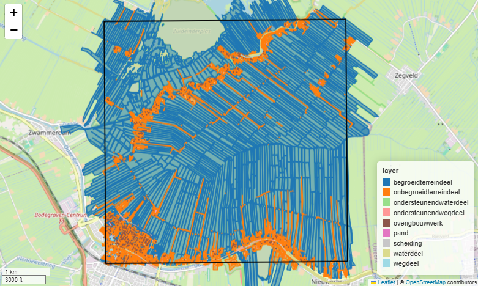
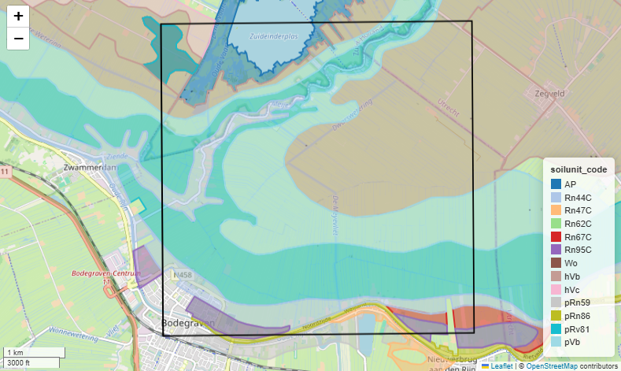

Calculate coverage example#
This examples shows how lusos can calculate the coverage percentages of BGT-soilmap unit combinations in each raster cell of a 2D grid. The way the coverage is calculated is shown on the previous page. This tutorial shows for a small area of 5x5 km how the coverage for the BGT-soilmap combinations can be calculated. We will use sample data that is available from the lusos-repository.
We begin with the necessary imports, a definition of the xmin, ymin, xmax, ymax bounding box of the example area so we can indicate the location and load the BGT and soilmap data.
import geopandas as gpd
from shapely import geometry as gmt
import lusos
# Bounding box for the example area
xmin, ymin, xmax, ymax = 111_000, 455_000, 116_000, 460_000
study_area = gpd.GeoDataFrame(geometry=[gmt.box(xmin, ymin, xmax, ymax)], crs=28992)
soilmap = lusos.data.sample_soilmap()
bgt = lusos.data.sample_bgt()
Downloading file 'bro_soilmap.gpkg' from 'https://github.com/Deltares-research/lulucf-somers/raw/main/data/bro_soilmap.gpkg' to 'C:\Users\runneradmin\AppData\Local\lusos\lusos\Cache'.
Downloading file 'bgt_data.geoparquet' from 'https://github.com/Deltares-research/lulucf-somers/raw/main/data/bgt_data.geoparquet' to 'C:\Users\runneradmin\AppData\Local\lusos\lusos\Cache'.
Let’s first checkout the BGT data: 
Now let’s checkout the soilmap data: 
The maps show that the BGT data has 9 different units and the soilmap has 13 different units (i.e. soilunit_codes). Lusos groups the units of the soilmap into four main groups based on the “soilunit_code”: “peat”, “moerig”, “buried” and “other”. The BGT and grouped soilmap therefore have 36 unique combinations and calculating the coverage of the BGT-soilmap combinations for a grid of nrows and ncolumns will thus result in a NxNx36 sized grid.
As you can see, almost the complete study area is covered by both BGT and soilmap data. In builtup areas (e.g. cities) and in the locations of water bodies, soilmap data is not present. In the locations where the soilmap is missing, the combined result will produce a missing value.
Let’s now define the grid where we are going to calculate the coverage for.
xresolution = yresolution = 25
grid = lusos.LassoGrid(xmin, ymin, xmax, ymax, xresolution, yresolution)
grid
LassoGrid(xmin=111000, ymin=455000, xmax=116000, ymax=460000, xsize=25, ysize=-25)
coverage = lusos.bgt_soilmap_coverage(bgt, soilmap, grid)
coverage
D:\a\lulucf-somers\lulucf-somers\.pixi\envs\default\Lib\site-packages\xugrid\regrid\structured.py:606: FutureWarning: In a future version of xarray the default value for compat will change from compat='no_conflicts' to compat='override'. This is likely to lead to different results when combining overlapping variables with the same name. To opt in to new defaults and get rid of these warnings now use `set_options(use_new_combine_kwarg_defaults=True) or set compat explicitly.
ds = xr.merge([ds_x, ds_y])
D:\a\lulucf-somers\lulucf-somers\.pixi\envs\default\Lib\site-packages\xugrid\regrid\structured.py:606: FutureWarning: In a future version of xarray the default value for compat will change from compat='no_conflicts' to compat='override'. This is likely to lead to different results when combining overlapping variables with the same name. To opt in to new defaults and get rid of these warnings now use `set_options(use_new_combine_kwarg_defaults=True) or set compat explicitly.
ds = xr.merge([ds_x, ds_y])
<xarray.DataArray (y: 200, x: 200, layer: 36)> Size: 12MB
array([[[9.73754688e-01, 0.00000000e+00, 0.00000000e+00, ...,
0.00000000e+00, 0.00000000e+00, 0.00000000e+00],
[7.45819971e-01, 0.00000000e+00, 0.00000000e+00, ...,
0.00000000e+00, 0.00000000e+00, 0.00000000e+00],
[9.93312402e-01, 0.00000000e+00, 0.00000000e+00, ...,
0.00000000e+00, 0.00000000e+00, 0.00000000e+00],
...,
[8.91293066e-01, 0.00000000e+00, 0.00000000e+00, ...,
0.00000000e+00, 0.00000000e+00, 0.00000000e+00],
[1.00000000e+00, 0.00000000e+00, 0.00000000e+00, ...,
0.00000000e+00, 0.00000000e+00, 0.00000000e+00],
[9.84478516e-01, 0.00000000e+00, 0.00000000e+00, ...,
0.00000000e+00, 0.00000000e+00, 0.00000000e+00]],
[[7.40980225e-01, 0.00000000e+00, 0.00000000e+00, ...,
0.00000000e+00, 0.00000000e+00, 0.00000000e+00],
[9.88807129e-01, 0.00000000e+00, 0.00000000e+00, ...,
0.00000000e+00, 0.00000000e+00, 0.00000000e+00],
[7.95164844e-01, 0.00000000e+00, 0.00000000e+00, ...,
0.00000000e+00, 0.00000000e+00, 0.00000000e+00],
...
6.31507568e-02, 0.00000000e+00, 0.00000000e+00],
[0.00000000e+00, 0.00000000e+00, 0.00000000e+00, ...,
1.97246960e-01, 0.00000000e+00, 0.00000000e+00],
[0.00000000e+00, 0.00000000e+00, 0.00000000e+00, ...,
2.16610156e-01, 0.00000000e+00, 0.00000000e+00]],
[[0.00000000e+00, 0.00000000e+00, 0.00000000e+00, ...,
0.00000000e+00, 0.00000000e+00, 0.00000000e+00],
[0.00000000e+00, 0.00000000e+00, 0.00000000e+00, ...,
0.00000000e+00, 0.00000000e+00, 0.00000000e+00],
[0.00000000e+00, 0.00000000e+00, 0.00000000e+00, ...,
0.00000000e+00, 0.00000000e+00, 0.00000000e+00],
...,
[0.00000000e+00, 0.00000000e+00, 0.00000000e+00, ...,
1.69158530e-04, 0.00000000e+00, 0.00000000e+00],
[0.00000000e+00, 0.00000000e+00, 0.00000000e+00, ...,
2.26335645e-01, 0.00000000e+00, 0.00000000e+00],
[0.00000000e+00, 0.00000000e+00, 0.00000000e+00, ...,
2.25348364e-01, 0.00000000e+00, 0.00000000e+00]]],
shape=(200, 200, 36))
Coordinates:
* y (y) float64 2kB 4.6e+05 4.6e+05 4.599e+05 ... 4.55e+05 4.55e+05
* x (x) float64 2kB 1.11e+05 1.11e+05 1.111e+05 ... 1.16e+05 1.16e+05
* layer (layer) <U22 3kB 'percelen_peat' ... 'overig_other'